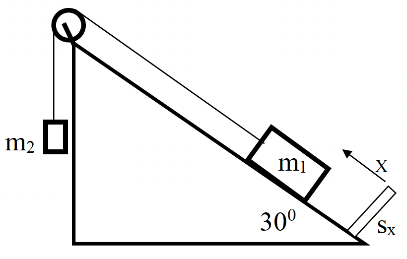
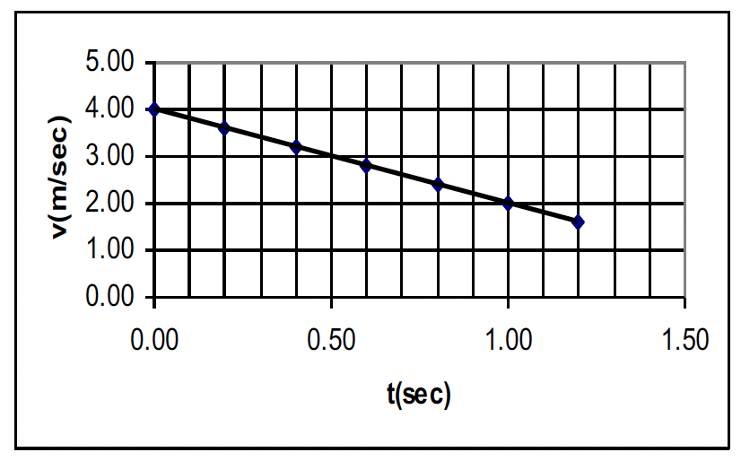

גוף שמסתו m1, הנמצא על מדרון חלק ומספיק ארוך, קשור באמצעות חוט הכרוך סביב גלגלת למשקולת שמסתה m2. המדרון נטוי בזווית 30° לאופק, וכיוון הציר החיובי x של הגוף שמסתו m1 מסומן בתרשים 1. מאחורי הגוף שמסתו m1 ניצב מד מרחק Sx, ניצב למדרון ומחובר למחשב. ברגע t=0 מפעילים את מד המרחק ועל מסך המחשב נרשם גרף המתאר את מהירות הגוף שמסתו m1 כפונקציה של הזמן. (ראה תרשים 2).

בסעיפים א'-ד', הגוף שמסתו m1 אינו מגיע לגלגלת והמשקולת m2 אינה נוגעת ברצפה.

האם בתחילת המדידה המערכת נמצאת במנוחה? אם לא, מה הגודל וכיוון המהירות ההתחלתית של הגוף שמסתו m1? (6 נקודות)
1) חשבו את תאוצת הגוף שמסתו m1. (2 נקודות)
2) בהתאם לכיוון הציר החיובי המסומן בתרשים 1 עבור הגוף שמסתו m1, קבעו מהו הכיוון החיובי של תאוצת המשקולת שמסתה m2. הסבירו. (2 נקודות)
3) קבעו אם תאוצת המשקולת שמסתה m2 שווה לתאוצת הגוף שמסתו m1, גדולה ממנה או קטנה ממנה. נמקו. (2 נקודות)
סרטטו לכל אחד משני הגופים תרשים כוחות מתאים, ובעזרת תרשימי הכוחות מצאו ביטוי לתאוצת הגוף שמסתו m1 כתלות בנתוני השאלה (m1, m2, g). (10.33 נקודות)
נתון כי מסתו של הגוף הראשון m1=2Kg. חשבו את מסת המשקולת m2. (5 נקודות)
1) כעבור 4 שניות מתחילת המדידה נקרע החוט. חשבו את מהירות המשקולת שמסתה m2 ברגע הקריעה (גודל וכיוון). (2 נקודות)
2) תארו באופן איכותי את תנועת המשקולת שמסתה m2 מרגע הקריעה ועד לפגיעה בקרקע. ציינו רק את כיוון המהירות ואת כיוון התאוצה לאורך כל התנועה, ללא גדלים. (4 נקודות)